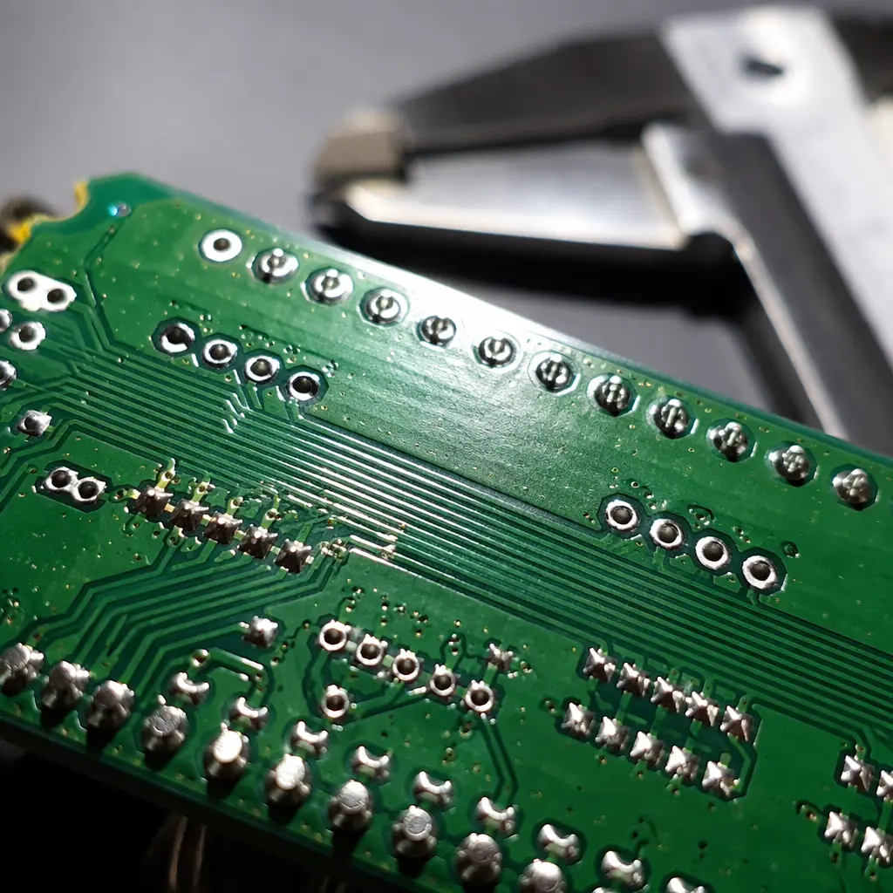
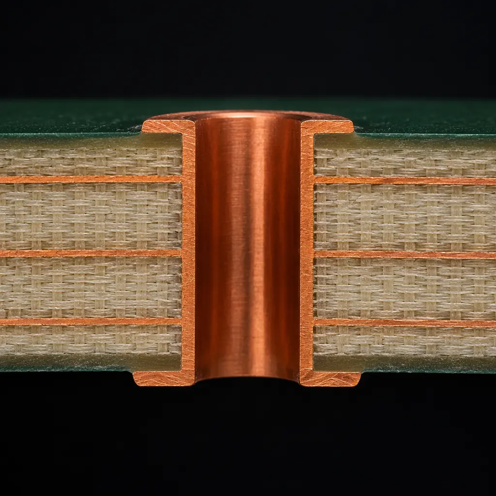

PCB quality disputes between overseas buyers and Chinese manufacturers happen — not because Chinese factories are inherently unreliable, but because PCB manufacturing involves over 50 process steps, each with statistical variation. A shipment of 5,000 boards with 3% defect rate means 150 boards with lifted pads, insufficient hole copper, or solder mask registration errors. The difference between recovering your cost and absorbing a loss comes down to three things: referencing a specific IPC acceptance class in your purchase order, producing third-party lab evidence that links the defect to a manufacturing deviation, and negotiating from a position of documented facts rather than emotions.
At Huaxing PCBA, our quality system is built around IPC-A-600 Class 2 and Class 3 acceptance criteria, verified through AOI on every panel and cross-section analysis on statistical samples from every production lot. We hold IATF 16949, ISO 9001, and UL certifications. This guide draws on real dispute resolution experience — both from the buyer's perspective dealing with substandard suppliers, and from the manufacturer's perspective receiving quality claims.

Step 1: The Purchase Order Is Your First Line of Defense
Every quality dispute starts with a gap between what you expected and what you received. The size of that gap is determined by how precisely your purchase order defines "acceptable." A PO that says "PCB per Gerber files, IPC Class 2" is ambiguous — IPC Class 2 defines acceptance criteria for dozens of parameters, and a fabricator can interpret each one differently. A PO that references specific IPC tables closes those interpretation gaps before the first panel is produced.
Reference Specific IPC-6012 Tables, Not Just "Class 2" or "Class 3"
IPC-6012 defines acceptance requirements for rigid PCBs across multiple performance classes. The table that matters most in disputes is Table 3-2 (Annular Ring Requirements). A Class 2 board allows 90° breakout of the hole from the land — the hole edge can touch the land edge. A Class 3 board requires a minimum 0.025 mm annular ring with no breakout. If your PO only says "Class 2," the fabricator can ship boards with breakout, and you have no contractual basis to reject them. Write it explicitly: "Annular ring per IPC-6012 Table 3-2, Class 3: minimum 0.025 mm external, no breakout permitted." See our IPC Class 2 vs Class 3 guide for the full acceptance criteria comparison.
Define AQL (Acceptable Quality Limit) for Visual Defects
IPC-A-600 defines what constitutes a defect — but not what percentage of defects makes a lot rejectable. That's AQL, and it must be in your PO: "AQL 0.65 for critical defects (functional failure), AQL 1.0 for major defects (IPC-A-600 nonconformance), AQL 2.5 for minor defects (cosmetic)." Without AQL numbers, a fabricator can argue that 5% lifted pads is "within normal manufacturing variation." With AQL 1.0, a sample of 200 boards with 5 or more major defects triggers lot rejection. For the full inspection framework, read our incoming quality inspection guide.
Include a Concession and Remedy Clause
Specify what happens when defects are found: "Defects exceeding AQL shall be remedied at supplier's expense by (a) rework if IPC-7711/7721 repair criteria permit, (b) replacement boards at no charge, or (c) pro-rata refund for unrepairable boards. Third-party lab testing costs borne by the party whose claim is not supported by the test result." A clear remedy clause prevents the most common dispute escalation path: the supplier offering a 5% credit on the next order as "goodwill" when the actual scrap rate is 25%. Our pre-shipment inspection guide covers catching defects before they ship.
Real Case: A medical device OEM lost $47,000 on a lot of 2,000 Class 3 PCBs with insufficient hole copper (18 µm average vs 25 µm minimum per IPC-6012 Table 3-3). Their PO said "IPC Class 3" but didn't list Table 3-3. The supplier argued the boards met Class 3 visual criteria per IPC-A-600, and that hole copper was "a separate specification not referenced." The OEM had no legal basis to reject and absorbed the loss. Lesson: reference the table, not the class name.
Step 2: Document the Defect With Evidence the Supplier Cannot Dispute
When you discover defects, the clock starts on two fronts: your internal production schedule (you need good boards) and the supplier's willingness to accept responsibility (which decreases with time). The quality of your evidence determines whether the supplier disputes the claim or accepts it within 48 hours.
Cross-Section Micrographs Are the Gold Standard of Evidence
A cross-section — a polished slice through a plated through-hole or solder joint, imaged under a microscope at 100–200× magnification — is the most powerful evidence in any PCB quality dispute. It shows hole copper thickness within ±1 µm, the presence or absence of voids, the integrity of the copper-to-interconnect interface, and annular ring dimensions — all referenced against the measurement scale embedded in the image. A Chinese manufacturer will not dispute their own cross-section data; a third-party lab's micrographs from a randomly selected sample of your received boards are even stronger. Expect to pay $150–300 per cross-section at a lab such as SMT Corp, Integra Technologies, or any IPC-certified testing facility. See our microsection analysis guide for what to request.
Solderability Testing: The Defect That Looks Perfect Under AOI
Boards that pass visual inspection and AOI can still fail during assembly due to poor solderability — oxidized surface finishes, contaminated pads, or intermetallic growth on ENIG surfaces exposed to humidity. The J-STD-003 solderability test (dip-and-look or wetting balance) at a third-party lab costs $200–400 but provides objective evidence: a wetting force curve that quantitatively shows whether the surface finish meets the required wetting time. For more on surface finish reliability, see our surface finish selection guide and ENIG vs HASL comparison.
Photographic Evidence: The 3-Shot Rule
For visual defects (solder mask misregistration, surface scratches, handling damage), take three photographs of every defect: (1) a macro shot showing the defect in context on the board, (2) a close-up at the highest magnification your camera or USB microscope can achieve, showing the specific non-conformance, and (3) a shot with a measurement scale — a ruler or caliper — next to the defect, showing the dimension. Suppliers routinely dispute "it's within tolerance" for photos without a scale. With a scale visible, the dispute shifts from "is it a defect" to "what's the remedy." Our first article inspection guide covers the complete documentation framework.

Step 3: The Negotiation Framework — What to Ask For and in What Order
Quality disputes with Chinese PCB manufacturers follow a predictable pattern. The supplier's first response is almost always defensive: "We've never had this problem before," "Our other customers accept this quality level," or "Send the boards back and we'll check them." Your response template determines whether the dispute concludes in days or drags on for months:
Open With Evidence, Not Accusation
Send an email that opens with: "We received lot [number] on [date]. Our incoming inspection per IPC-A-600 [Class] found [X] boards with [describe defect], documented in the attached cross-section micrographs / photographs with measurement scales. Per our purchase order section [reference], which specifies [IPC table and AQL], these boards do not meet the acceptance criteria." Never open with "Your quality is terrible" or "We're returning everything." The evidence-based opening signals that you are following a documented process, not reacting emotionally. The supplier's quality manager now has a clear standard to measure against. For more on PO construction, read our PCB quote comparison guide.
Ask for Replacement Before Refund — It Aligns Incentives
Requesting replacement boards at no charge (including expedited shipping) aligns the supplier's incentive with yours: they manufacture replacements at their internal cost (typically 40–60% of the selling price) rather than refunding 100% of the invoice. Most Chinese PCB manufacturers will agree to replacement within 24 hours if the evidence is clear. A refund — which costs them revenue plus the relationship — requires escalation to ownership and takes 2–4 weeks. Reserve refund demands for cases where the supplier's capability cannot meet your specification and you need to qualify a new source. Our supplier transition guide covers the qualification process.
Use the "8D Report" as a Relationship Reset, Not a Punishment
An 8D (Eight Disciplines) corrective action report is the standard format for quality problem-solving in electronics manufacturing. Requesting an 8D from your supplier serves two purposes: it forces the supplier's engineering team to perform root cause analysis (rather than the sales team guessing), and it signals that you view this as a process problem to be solved, not a relationship to be terminated. A supplier that delivers a credible 8D with a permanent corrective action (e.g., "increased hole copper plating time from 45 to 55 minutes, added cross-section sampling from 2 to 5 coupons per panel") has demonstrated they are worth continuing with. A supplier that responds with "we will pay more attention next time" has not, and should be put on a performance improvement plan or replaced. See our supplier quality scorecard guide for tracking supplier performance over time.
When to Escalate Beyond the Supplier
Most PCB quality disputes are resolved directly between buyer and manufacturer. But three scenarios warrant escalation:
| Scenario | Escalation Path | Typical Timeline |
|---|---|---|
| Supplier denies responsibility despite clear IPC non-conformance | Third-party lab audit report → Alibaba Trade Assurance claim (if ordered via Alibaba) or letter from China-based law firm | 30–60 days |
| Systemic quality failure (multiple lots, same defect) | On-site audit by your engineer or hired inspection company (AsiaInspection, QIMA, Bureau Veritas) at $800–1,500/day | 2–4 weeks |
| Supplier refuses replacement and refund, value >$10,000 | Legal demand letter → CIETAC arbitration (if PO specifies China arbitration) or Hong Kong International Arbitration Centre | 6–12 months |
On-site audits are the most underused escalation tool. For $1,500, an inspector spends a day at the factory reviewing process controls, interviewing operators, and photographing the actual production line that made your boards. The resulting report — especially when it identifies a specific process deviation (e.g., "etching line conveyor speed set 15% faster than the process specification for your 2oz copper boards") — is nearly impossible for a supplier to dispute. For the full audit framework, see our PCB supplier audit guide.
Key Takeaway: The cost of a third-party lab test ($300) or an on-site audit ($1,500) is trivial compared to the cost of absorbing a rejected lot ($10,000–100,000). Yet most buyers skip this step and negotiate from a position of "we think these are bad." Spend the money on evidence. It pays back 10–100× in recovered value.
Prevention: How to Avoid Disputes in the First Place
The best dispute is the one that never happens. Four practices reduce quality disputes by 80% or more:
First, approve a first article before mass production. A first article inspection report (FAIR) per AS9102 or IPC guidelines catches process issues before they affect 2,000 boards. The supplier ships you 5–10 boards from the first production panel; you (or a third-party lab) verify every critical dimension, and only then does the full lot run. The FAIR adds 3–5 days to lead time but prevents the scenario where 100% of boards are defective on a single parameter. Second, use a shared quality dashboard. Require the supplier to upload AOI defect maps, cross-section images, and impedance test data to a shared folder for every lot — not just the ones you ask about. Suppliers whose quality data is visible in real time have 40% fewer disputes because process drift is caught and corrected before it produces rejects. Third, conduct annual on-site audits — even if the relationship is good. A supplier who knows you'll walk their production floor once a year maintains process discipline differently than one who ships to an invisible customer. Fourth, dual-source critical boards. Having a qualified second source for your highest-volume or highest-value PCBs means any dispute with your primary supplier is a negotiation about terms, not a production stoppage. Our dual sourcing strategy guide covers the economics and qualification requirements.
Quality disputes in PCB procurement are inevitable — the statistical nature of a 50-step manufacturing process guarantees it. But the outcome of a dispute is not random. A purchase order that references specific IPC tables and AQLs, evidence from a third-party lab that quantifies the non-conformance, and a negotiation that asks for replacement before refund — these turn a $47,000 loss into a 2-week delay and a strengthened supplier relationship. Start with your next PO: add the table references and AQL numbers today. For the complete quality management framework, read our PCB certifications guide and failure analysis guide, or contact our quality team to discuss your inspection requirements.